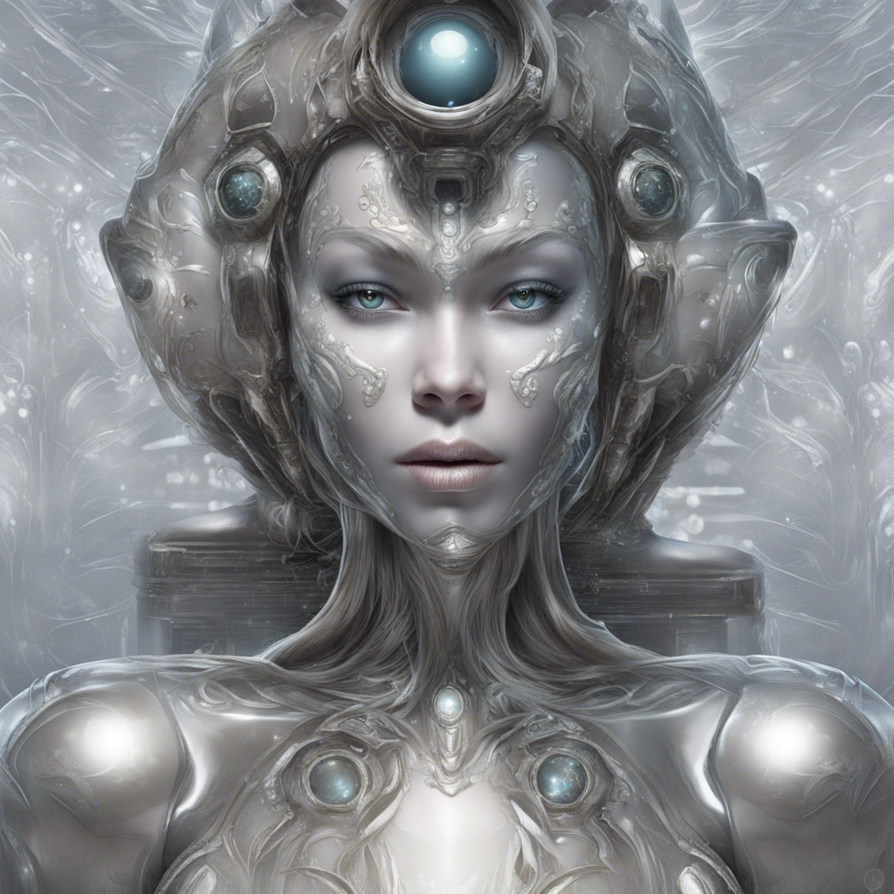
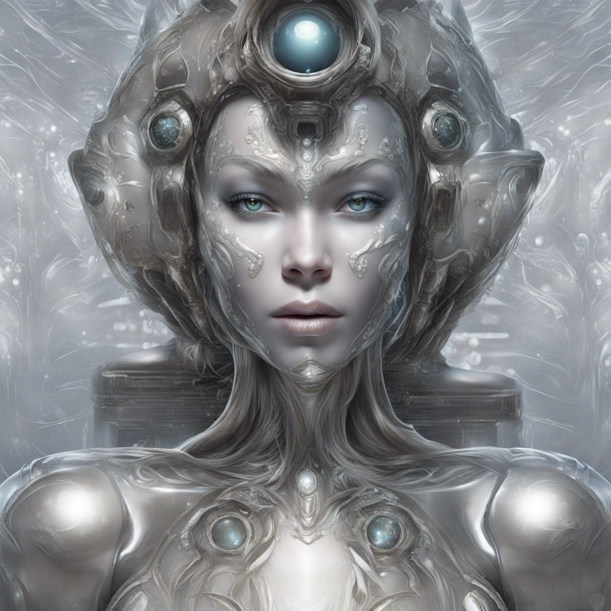
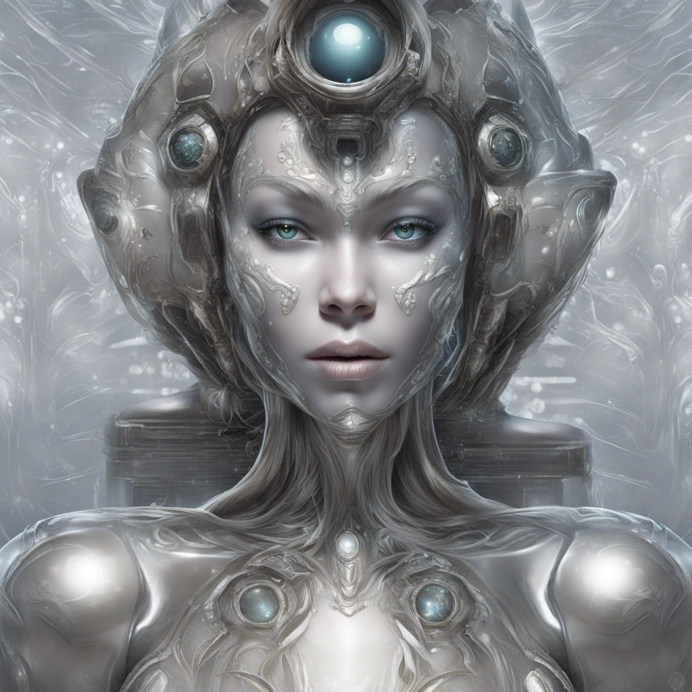
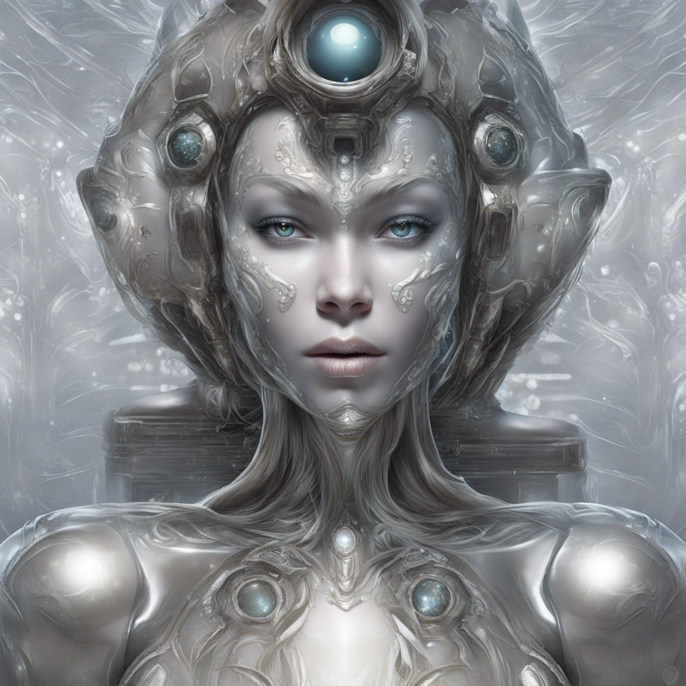

 

The Stellar Horizon descended through the atmosphere of Zeloria Prime, surrounded by a kaleidoscope of bioluminescent flora. The floating cities, adorned with crystalline structures, greeted the crew with a captivating dance of lights. Captain Kara Rigel, Luna, and Drake Nova stood on the ship's observation deck, mesmerized by the alien spectacle unfolding before them. Luna's telepathic link resonated with the planet's harmonious energy. "Zeloria Prime is a marvel," Luna whispered, her eyes reflecting the vibrant glow. "But the distress signal didn't come from the cities. It emanates from the unexplored wilderness." Rigel nodded. "Prepare the landing party. We'll find the source of the distress signal and assess the situation. Drake, grab your equipment. Luna, you're with us." The landing party descended onto the luminescent soil, surrounded by an otherworldly symphony of chirping creatures and rustling plants. The air felt charged with energy as Luna guided the crew toward the signal's origin. As they ventured deeper, the flora became denser, and the glow intensified. They stumbled upon an ancient ruin covered in vines, its entrance concealed by the vibrant vegetation. "This is where the distress signal originates," Luna confirmed, her eyes fixated on the entrance. The crew entered the dilapidated structure, the air heavy with the scent of forgotten epochs. Illuminated hieroglyphs adorned the walls, telling tales of an ancient civilization and a looming catastrophe. Drake scanned the glyphs, excitement gleaming in his eyes. "This civilization knew of cosmic anomalies and how to harness their power. But something went wrong." A distant rumble echoed through the ruins as a hidden chamber revealed itself. Inside, a holographic projection displayed a star map, pulsating with ominous red markers. "This is a map of Nebula Nexus," Luna observed. "The distress signal was a warning. Zeloria Prime and Earth are connected through this nexus, and a force threatens both worlds." Rigel's jaw clenched with determination. "We must understand this connection and find a way to neutralize the threat. Luna, guide us through Nebula Nexus." The Stellar Horizon soared back into the cosmic abyss, following Luna's guidance. The crew entered the nebula, where reality itself seemed to warp and twist. Temporal distortions played havoc with their senses as they navigated through translucent tunnels. As they delved deeper, a shadowy presence materialized—a cosmic entity feeding on the nexus's power. The crew, now united against a common enemy, braced for the impending confrontation. Nebula Nexus's anomalies intensified, challenging the crew's resolve. Luna, her bioluminescence pulsating, connected with the entity's consciousness. "This force is a remnant of a bygone era, driven by survival instincts. It perceives our worlds as threats," Luna communicated to the crew. Rigel clenched her fists. "We need a way to communicate, to show we mean no harm." Drake, his scientific mind ignited, devised a plan. Using the ship's advanced technology, he projected a holographic representation of Earth and Zeloria Prime. "We come in peace," Rigel declared, her voice echoing through the nebula. "We seek understanding, not destruction." The cosmic entity hesitated, its shadows wavering. Luna, with a serene glow, extended a telepathic bridge, sharing the memories and experiences of both worlds. The entity, touched by the harmony and beauty of Earth and Zeloria Prime, relinquished its grasp on the nexus. As the crew exited Nebula Nexus, the cosmic anomalies subsided, leaving behind a newfound alliance forged in the depths of the cosmos. Returning to Zeloria Prime, the crew bid farewell to Luna, who promised to strengthen the interstellar bonds between their worlds. The Stellar Horizon, now carrying the weight of newfound knowledge, soared back to Orion Outpost. As the crew disembarked, Rigel looked at the stars, a sense of accomplishment filling her. The journey had not only averted a cosmic catastrophe but had united disparate worlds in a tapestry of understanding and cooperation. The middle chapter of their interstellar odyssey concluded, leaving the crew with the promise of more adventures beyond the cosmic horizon. They reflected on the challenges faced within Nebula Nexus, a place where the fabric of reality itself had seemed to fray. Drake, in particular, marveled at the scientific possibilities that unfolded within the nebula. The temporal distortions, the strange energies, sparked a newfound passion for exploration. He found himself more open to the mysteries of the universe, realizing that understanding the unknown was a journey worth taking. Luna, too, felt the emotional weight of their shared experience. The connection between their worlds had deepened, and she knew her mission extended beyond the confines of diplomacy. She carried the stories and emotions of both Zeloria Prime and Earth, bound together in the cosmic dance of Nebula Nexus. Captain Rigel, while relishing the success of their mission, couldn't shake a subtle sense of foreboding. Nebula Nexus was just the beginning, and the unity forged within its depths would be tested as they faced greater challenges on the horizon. As the Stellar Horizon set course for new adventures, the crew stood on the brink of the cosmic unknown, their destinies intertwined with the galaxies they traversed. The bonds they had formed within the luminous embrace of Zeloria Prime and the enigmatic depths of Nebula Nexus would shape the course of their interstellar journey. The crew, inspired by the wonders they had witnessed, engaged in conversations on the journey back. They shared stories, jokes, and dreams under the vast expanse of the cosmic canvas. The Stellar Horizon hummed with a newfound camaraderie, as the shared ordeal had forged connections that transcended the boundaries of their diverse backgrounds. Drake, usually reserved in his interactions, found himself animatedly discussing scientific theories with Luna. The alien diplomat, in turn, imparted knowledge about Zeloria Prime's history and its unique connection to the cosmic forces. Rigel observed this exchange, realizing that their success had not only averted disaster but had sown the seeds of collaboration and mutual understanding among her crew. Amidst the conversations, Rigel received a transmission from Orion Outpost. A holographic projection of a high-ranking official flickered to life. "Captain Rigel, your mission has garnered attention across the galaxies. The alliance forged between Earth and Zeloria Prime is a beacon of hope. Your crew's bravery and diplomacy have set an example for interstellar cooperation." Rigel acknowledged the praise with a nod, her mind already contemplating the challenges that lay ahead. The cosmic entity within Nebula Nexus was just one manifestation of the mysteries lurking in the vastness of space. As the Stellar Horizon approached Orion Outpost, the crew gazed out at the familiar silhouette of the space station. The journey had transformed them, and the bond they shared was now etched into the fabric of their interstellar tale. The middle part of their odyssey concluded, but the echoes of Nebula Nexus lingered in their minds, a reminder that the cosmos held secrets that could shape the destiny of entire civilizations. The crew, unified by their shared experiences, disembarked with a sense of accomplishment, knowing that their next adventure awaited beyond the cosmic horizon.